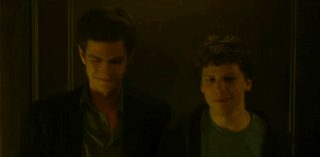

Отвели взгляд — получите по глазам.
Камера следит, не отвлеклись ли вы. Отвлеклись — на весь экран влетает то, что вы выбрали сами. Всё считает ваш браузер: ни один кадр не уходит с компьютера.
Что будет
Кино на весь экран, а не уведомление.
свой файл
Как ловит
Взгляд, поворот головы, телефон в руке.
478 точек лица

Что считает
Сколько просидели и сколько потеряли.
по днямза год